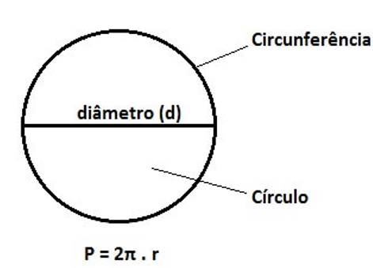
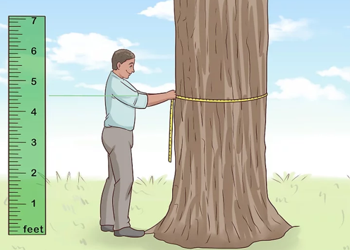
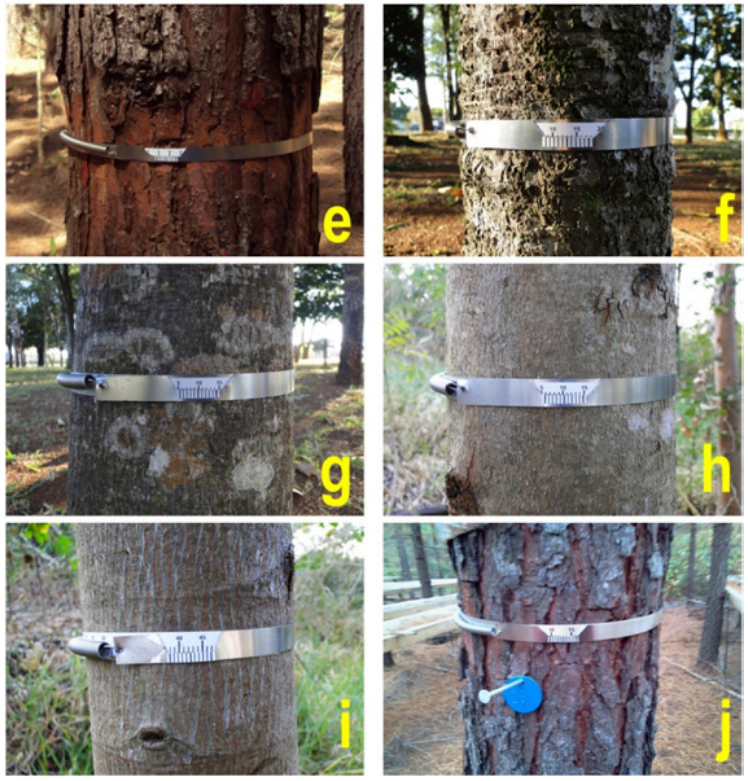
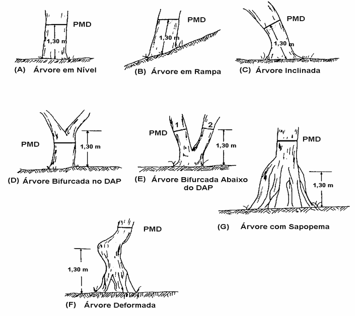
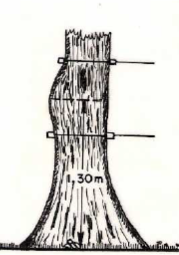
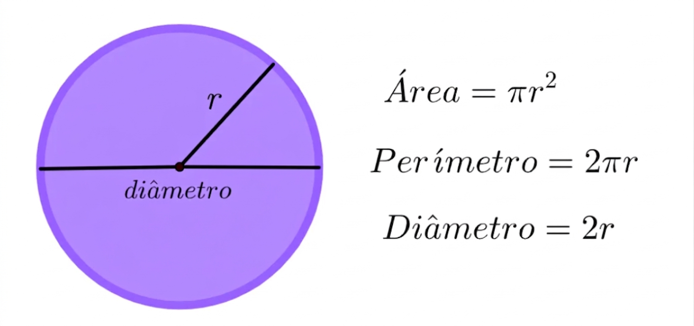
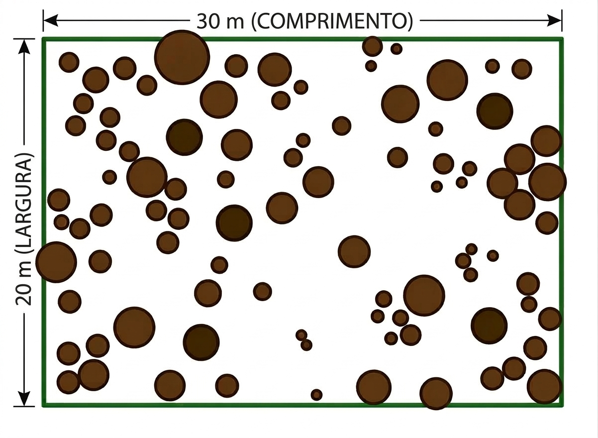

{kind=link}
|
|
|
|
UNIDADE 2 - DIÂMETRO
Diâmetro das árvores e área transversal
March 19, 2026
AULA DE HOJE
Aula de hoje
UNIDADE 2 - DIÂMETRO
2.1 - Diâmetro das árvores e a área basal.
2.2 - Medição do diâmetro.
DIÂMETRO
Diâmetro
Diâmetro é a variável de maior importância na Dendrometria;
Possui relação com diversas outras medidas de uma árvore;
É possivelmente a variável de mais fácil medição de uma árvore.
Diâmetro
Diâmetro ou circunferência


Diâmetro
Tanto diâmetro quanto circunferência podem ser utilizadas, pois são facilmente intercambiáveis.
\[ c = 2\pi r \quad e \quad d = 2r \quad \text{portanto} \quad r = {d \over 2} \]
\[ c = 2\pi {d\over 2} \quad \rightarrow \quad c = \pi d \quad \text{portanto} \quad d = {c \over \pi} \]
Diâmetro
DAP
Por que “altura do peito”?
| País | Altura de Medição |
|---|---|
| Países que usam o SI | 1,30 m |
| EUA e Canadá | 1,37 m |
| Inglaterra | 1,29 m |
| Japão | 1,25 m |
Diâmetro
Símbolos
| Variáveis e Símbolos | Variáveis e Símbolos |
|---|---|
| \(c\) = \(CAP\) circunferência à 1,3 altura (cm); | \(g\) = área transversal do indivíduo à 1,3 altura (m²) |
| \(d\)=\(DAP\) = diâmetro à 1,3 altura (cm) | \(G_{u.a}\) = área basal Unid. Amostral (m²/u.a); G = área basal do povoamento (m²/ha); |
| \(d_g\) = \(d_q\) = diâmetro médio ou diâmetro da árvore de área transversal média, diâmetro quadrático; | \(d_{0,6h}\) = diâmetro tomado à 60% da altura total; |
| \(\bar{d}\) = \(d_{médio}\) = diâmetro médio aritmético | \(d_{0,1h}\) = diâmetro tomado à 10% da altura total; |
| \(d_w\) = diâmetro de Weisse; | \(d_{0,1}\) = diâmetro tomado à 10cm da altura; |
| \(d_z\) = diâmetro da árvore com área transversal mediana; | \(d_4\) = diâmetro tomado à 4m de altura; |
| \(d^+\) e \(d^-\) = diâmetro de Hohenadl; | \(d_s\) = diâmetro sem casca |
Instrumentos de Medição
Existe uma miríade de instrumentos de medição de diâmetro (pelo menos 12). Os principais são:
Suta
Fita métrica
Instrumentos de Medição
Suta
A Suta consiste de uma régua graduada conectada a dois braços perpendiculares, sendo um fixo e o outro móvel.
Para a correta medição do diâmetro das árvores, é importante que a Suta esteja em posição perpendicular ao eixo do fuste da árvore.
Idealmente deve-se realizar uma medição cruzada da suta e tirar a média.

Instrumentos de Medição
Fita métrica
- A Fita Métrica é utilizada para a medição da circunferência da árvore.
- Neste caso, o diâmetro é obtido pelo desenvolvimento da relação matemática CAP dividido por \(\pi\)

Instrumentos de Medição
Fita diamétrica
Existe também a fita diamétrica, que fornece diretamente o valor do diâmetro.

Fita diamétrica. Fonte
Instrumentos de Medição
Fita diamétrica
Fita métrica vs. fita diamétrica
Veja que \(d = {c \over \pi}\).
O erro de \(1\) cm em circunferência equivale a \(d = {1 \over \pi} = 0.318\) cm em diâmetro.
O erro de \(1\) cm em diâmetro é \(1\) cm em diâmetro.
Instrumentos de Medição
Cintas dendrométricas (acompanhamento contínuo)

Fitas Dendrométricas; Fonte
Instrumentos de Medição
Novas Tecnologias
/i.s3.glbimg.com/v1/AUTH_7d5b9b5029304d27b7ef8a7f28b4d70f/internal_photos/bs/2021/3/i/BpcntdQjCNLTiMrwBA8Q/img-0787.jpg)
Instrumentos de Medição
Novas Tecnologias

Ponto de Medição do Diâmetro - PMD
Onde medir
Sempre desejamos medir \(d\) à 1,3m acima do nível do solo, mas nem sempre isso é possível.
O Ponto de Medição do Diâmetro (PMD) varia a depender das condições encontradas em campo.
Ponto de Medição do Diâmetro - PMD

Pontos de Medição do Diâmetro - PMD
Ponto de Medição do Diâmetro - PMD

Árvore descaracterizada na região do DAP.
Ponto de Medição do Diâmetro - PMD
Erros de Medição
Erros de medição
É preciso tomar cuidado com Erros de medição!. Podem ser causados por:
Sutas mal posicionadas
Fita muito solta (formando barriga)
Instrumentos não aferidos ou com problemas
Área Transversal
Área Transversal
A área transversal é definida como toda a área compreendida por um círculo de raio r.

Medidas de um círculo. Fonte
Área Transversal
Se pensarmos na área (\(g\)) em função do diâmetro, podemos reescrever a área de um círculo como
\[ d = 2r \quad \rightarrow \quad r = {d\over 2} \text{e} g = \pi r^2 \quad \text{, portanto} \]
\[ g = \pi \left({d \over 2}\right)^2 \quad \rightarrow \quad g = \pi {d^2 \over 4} \quad \rightarrow \quad g = {d^2\pi \over 4} \]
Área Transversal
Cuidado com as unidades!
Se \(d\) é fornecido em centímetros (\(cm\)), então \(g\) será \(cm^2\).
Se \(d\) é fornecido em metros (\(m\)), então \(g\) será \(m^2\).
Como sempre utilizamos \(g\) em \(m^2\), é possível converter diretamente \(cm \rightarrow m^2\) acrescentando o fator de conversão na fórmula
\[ g = {d^2 \pi \over 40000} \]
Portanto se \(DAP\) estiver em \(cm\), utiliza-se \(g = {d^2 \pi \over 40000}\), caso contrário utiliza-se \(g = {d^2 \pi \over 4}\).
Diâmetro e Área Transversal
Diâmetro e Área Transversal
Exercícios
Exercícios
Calcule a área transversal de cada medida abaixo
\(DAP = 30 cm\)
\(d = 0,07 m\)
\(CAP = 78 cm\)
\(c = 232 cm\)
\(d = 42 cm\)
Exercícios
Exercícios
Calcule a área transversal de cada medida abaixo
\(DAP = 30 cm \qquad \quad R = 0,0706 m^2\)
\(d = 0,07 m \qquad \quad \enspace R = 0,0038 m^2\)
\(CAP = 78 cm \qquad \quad R = 0,0483 m^2\)
\(c = 232 cm \qquad \quad R = 0,4283 m^2\)
\(d = 42 cm\qquad \quad R = 0,1385 m^2\)
Médias dendrométricas
Volume de dados
Considere o seguinte cenário
Volume de dados
Considere agora dados agrupados
| Parcela | DAP (cm) | N |
|---|---|---|
| T2P5 | 30.18 | 136 |
| T1P5 | 31.04 | 181 |
| T7P4 | 29.13 | 141 |
| T7P6 | 32.20 | 128 |
| T5P6 | 25.83 | 83 |
| T1P1 | 24.70 | 90 |
| T1P3 | 28.32 | 133 |
| T3P1 | 30.65 | 124 |
| T8P1 | 29.72 | 91 |
| T5P5 | 34.22 | 180 |
Cada parcela possui \(N\) indivíduos, todos representados pelo respectivo diâmetro apresentado.
Volume de dados
Considere agora dados agrupados
Anexando pacote: 'plotly'O seguinte objeto é mascarado por 'package:ggplot2':
last_plotO seguinte objeto é mascarado por 'package:stats':
filterO seguinte objeto é mascarado por 'package:graphics':
layoutDados Agrupados
As informações obtidas à campo podem vir nas formas de:
Dados Não Agrupados (DNA): onde cada diâmetro representa uma única árvore;
Dados Agrupados (DA): onde cada diâmetro representa \(N\) (ou \(n\)) árvores.
Médias dendrométricas
Somentes os números soltos não fornecem resultados proveitosos.
Existem médias de um ou mais elementos dendrométricos que podem descrever e resumir a informação contida nos números.
Médias dendrométricas
Média aritmética
\[ \bar{d} = {d_1 + d_2 + \cdots + d_n \over n} = {\displaystyle\sum_{i=1}^n d_i \over n} \] Para Dados Agrupados:
\[ \bar{d} = {d_1.n_1 + d_2.n_2 + \cdots + n_k.d_k \over n_1 + n_2 + \cdots + n_k} = {\displaystyle\sum_{i=1}^k n_id_i \over \displaystyle\sum_{i=1}^k n_i} \]
Médias dendrométricas
| Ordem | DAP (cm) |
|---|---|
| 1 | 17.0 |
| 2 | 19.6 |
| 3 | 7.5 |
| 4 | 16.1 |
| 5 | 9.2 |
| 6 | 9.4 |
| 7 | 5.4 |
| 8 | 8.4 |
| 9 | 13.8 |
| 10 | 10.2 |
| 11 | 18.9 |
| 12 | 23.6 |
| 13 | 20.4 |
Calcular o diâmetro médio \(\bar{d}\).
\(n\) = 13
Soma:\(\displaystyle\sum_{i=1}^{13} d_i\) = 179.5
\(\bar{d} = {1\over n} \displaystyle\sum_{i=1}^{13} d_i = {179.5 \over 13} = 13.8 cm\)
Médias dendrométricas
Área transversal média
É a média das áreas transversais.
\[ \bar{g} = {g_1 + g_2 + \cdots + g_n \over n} = {\displaystyle\sum_{i=1}^n g_i \over n} \]
Médias dendrométricas
| Ordem | DAP (cm) | g (m²) |
|---|---|---|
| 1 | 17.0 | |
| 2 | 19.6 | |
| 3 | 7.5 | |
| 4 | 16.1 | |
| 5 | 9.2 | |
| 6 | 9.4 | |
| 7 | 5.4 | |
| 8 | 8.4 | |
| 9 | 13.8 | |
| 10 | 10.2 | |
| 11 | 18.9 | |
| 12 | 23.6 | |
| 13 | 20.4 |
Calcule a área transversal média \(\bar{g}\).
Lembre que \(g_i = {d_i^2\pi \over 40000}\)
Médias dendrométricas
| Ordem | DAP (cm) | g (m²) |
|---|---|---|
| 1 | 17.0 | 0.0227 |
| 2 | 19.6 | 0.0302 |
| 3 | 7.5 | 0.0044 |
| 4 | 16.1 | 0.0204 |
| 5 | 9.2 | 0.0066 |
| 6 | 9.4 | 0.0069 |
| 7 | 5.4 | 0.0023 |
| 8 | 8.4 | 0.0055 |
| 9 | 13.8 | 0.0150 |
| 10 | 10.2 | 0.0082 |
| 11 | 18.9 | 0.0281 |
| 12 | 23.6 | 0.0437 |
| 13 | 20.4 | 0.0327 |
\(g_1 = {17^2\pi \over 40000} = 0.0227\)
\(g_2 = {19.6^2\pi \over 40000} = 0.0302\)
\[ \vdots \]
\(g_{13} = {20.4^2\pi \over 40000} = 0.0327\)
Médias dendrométricas
| Ordem | DAP (cm) | g (m²) |
|---|---|---|
| 1 | 17.0 | 0.0227 |
| 2 | 19.6 | 0.0302 |
| 3 | 7.5 | 0.0044 |
| 4 | 16.1 | 0.0204 |
| 5 | 9.2 | 0.0066 |
| 6 | 9.4 | 0.0069 |
| 7 | 5.4 | 0.0023 |
| 8 | 8.4 | 0.0055 |
| 9 | 13.8 | 0.0150 |
| 10 | 10.2 | 0.0082 |
| 11 | 18.9 | 0.0281 |
| 12 | 23.6 | 0.0437 |
| 13 | 20.4 | 0.0327 |
\(\bar{g} = {\displaystyle\sum_{i=1}^{n}g_i \over n}\)
\(\displaystyle\sum_{i=1}^{13} g_i = 0.2267\)
\(\bar{g} = {\displaystyle\sum_{i=1}^{13} g_i \over n} = {0.2267 \over 13} = 0.0174 m^2\)
Médias dendrométricas
Área transversal média
Veja que a área transversal média \(\bar{g}\) pode ser reescrita como
\[ \bar{g} = {1 \over n}\left(g_1 + g_2 + \cdots + g_n\right) \]
\[ \bar{g} = {1 \over n}\left({d_1^2\pi\over 40000} + {d_2^2\pi \over 40000} + \cdots + {d_n^2\pi \over 40000} \right) \]
\[ \bar{g} = {1 \over n} {\pi \over 40000} \left( d_1^2 + d_2^2 + \cdots + d_n^2 \right) \]
Médias dendrométricas
Diâmetro de área transversal média
O diâmetro de área transversal média (\(d_g\)) é definido como o diâmetro equivalente da área tranversal média.
\[ g = {d^2\pi \over 40000} \]
\[ \bar{g} = {d_g^2\pi \over 40000} \]
Médias dendrométricas
Diâmetro de área transversal média
\[ \bar{g} = {d_g^2\pi \over 40000} \quad \rightarrow \quad d_g^2 = {\bar{g}.40000 \over \pi} \]
Portanto
\[ d_g = \sqrt{\bar{g} . 40000 \over \pi} \]
Médias dendrométricas
Diâmetro de área transversal média
No nosso exemplo, \(\bar{g} = 0.0174\) m², portanto
\(d_g = \sqrt{0.0174 \times 40000 \over \pi} = 14.9\) cm
Médias dendrométricas
Diâmetro de área transversal média
Se \(\bar{g} = {1 \over n} {\pi \over 40000} \left( d_1^2 + d_2^2 + \cdots + d_n^2 \right)\), então
\[ \bar{g} = {1 \over n} {\pi \over 40000} \left( d_1^2 + d_2^2 + \cdots + d_n^2 \right) = {d_g^2 \pi \over 40000} \] Portanto
\[ d_g^2 = {1 \over n} {\pi \over 40000} \left( d_1^2 + d_2^2 + \cdots + d_n^2 \right) {40000 \over \pi} \] \[ d_g^2 = {1 \over n} \left(d_1^2 + d_2^2 + \cdots + d_n^2 \right) \quad \rightarrow \quad d_g = \sqrt{\displaystyle\sum_{i=1}^n d_i^2 \over n} \]
Médias dendrométricas
Diâmetro de área transversal média
O \(d_g\) sempre será maior que a média aritmética \(d\)
Médias dendrométricas
Diâmetro da árvore média de Weise
Situa-se a 60% da distribuição dos diâmetros
Requer colocar os diâmetros em ordem crescente.
Médias dendrométricas
Diâmetro da árvore média de Weise
| Nova Ordem | DAP |
|---|---|
| 1 | 5.4 |
| 2 | 7.5 |
| 3 | 8.4 |
| 4 | 9.2 |
| 5 | 9.4 |
| 6 | 10.2 |
| 7 | 13.8 |
| 8 | 16.1 |
| 9 | 17.0 |
| 10 | 18.9 |
| 11 | 19.6 |
| 12 | 20.4 |
| 13 | 23.6 |
- Primeiro passo é identificar a posição (ordem) que representa 60% da distribuição
\[ n \times 0.6 = 13 \times 0.6 = 7.8 \]
\[ \begin{array}{l} 7 \quad \rightarrow \quad 13.8 \\ 7.8 \quad \rightarrow \quad d_w \\ 8 \quad \rightarrow \quad 16.1 \end{array} \]
Médias dendrométricas
Diâmetro da árvore média de Weise
| Nova Ordem | DAP |
|---|---|
| 1 | 5.4 |
| 2 | 7.5 |
| 3 | 8.4 |
| 4 | 9.2 |
| 5 | 9.4 |
| 6 | 10.2 |
| 7 | 13.8 |
| 8 | 16.1 |
| 9 | 17.0 |
| 10 | 18.9 |
| 11 | 19.6 |
| 12 | 20.4 |
| 13 | 23.6 |
\[ \begin{array}{l} 7 \quad \rightarrow \quad 13.8 \\ 7.8 \quad \rightarrow \quad d_w \\ 8 \quad \rightarrow \quad 16.1 \end{array} \]
\[ {8-7 \over 7.8-7} = {16.1-13.8 \over d_w-13.8} \]
\[ {1 \over 0.8} = {2.3 \over d_w-13.8} \]
\[ d_w-13.8 = {2.3 \times 0.8 \over 1} \] \[ d_w = 1.84 + 13.8 = 15.64 \enspace cm \]
Médias dendrométricas
Diâmetro da área transversal central \(d_z\)
Medida similar ao diâmetro quadrático médio (\(d_g\)), porém utilizando a área transversal que representa metade do acúmulo em área.
Essa área transversal central é obtida pela metade do valor acumulado de área transversal.
Médias dendrométricas
Diâmetro da área transversal central \(d_z\)
| Nova Ordem | DAP (cm) | g (m²) | gacum (m²) |
|---|---|---|---|
| 1 | 5.4 | 0.0023 | 0.0023 |
| 2 | 7.5 | 0.0044 | 0.0067 |
| 3 | 8.4 | 0.0055 | 0.0122 |
| 4 | 9.2 | 0.0066 | 0.0188 |
| 5 | 9.4 | 0.0069 | 0.0257 |
| 6 | 10.2 | 0.0082 | 0.0339 |
| 7 | 13.8 | 0.0150 | 0.0489 |
| 8 | 16.1 | 0.0204 | 0.0693 |
| 9 | 17.0 | 0.0227 | 0.0920 |
| 10 | 18.9 | 0.0281 | 0.1201 |
| 11 | 19.6 | 0.0302 | 0.1503 |
| 12 | 20.4 | 0.0327 | 0.1830 |
| 13 | 23.6 | 0.0437 | 0.2267 |
- Primeiro passo é encontrar a área transversal central
Médias dendrométricas
Diâmetro da área transversal central \(d_z\)
| Nova Ordem | DAP (cm) | g (m²) | gacum (m²) |
|---|---|---|---|
| 1 | 5.4 | 0.0023 | 0.0023 |
| 2 | 7.5 | 0.0044 | 0.0067 |
| 3 | 8.4 | 0.0055 | 0.0122 |
| 4 | 9.2 | 0.0066 | 0.0188 |
| 5 | 9.4 | 0.0069 | 0.0257 |
| 6 | 10.2 | 0.0082 | 0.0339 |
| 7 | 13.8 | 0.0150 | 0.0489 |
| 8 | 16.1 | 0.0204 | 0.0693 |
| 9 | 17.0 | 0.0227 | 0.092 |
| 10 | 18.9 | 0.0281 | 0.1201 |
| 11 | 19.6 | 0.0302 | 0.1503 |
| 12 | 20.4 | 0.0327 | 0.183 |
| 13 | 23.6 | 0.0437 | 0.2267 |
- Primeiro passo é encontrar a área transversal central
\[ 0.2267 \times 0.5 = 0.11335 m^2 \]
Isso quer dizer que 0.11335 é o ponto que acumula 50% da área transversal.
Médias dendrométricas
Diâmetro da área transversal central \(d_z\)
| Nova Ordem | DAP (cm) | g (m²) | gacum (m²) |
|---|---|---|---|
| 1 | 5.4 | 0.0023 | 0.0023 |
| 2 | 7.5 | 0.0044 | 0.0067 |
| 3 | 8.4 | 0.0055 | 0.0122 |
| 4 | 9.2 | 0.0066 | 0.0188 |
| 5 | 9.4 | 0.0069 | 0.0257 |
| 6 | 10.2 | 0.0082 | 0.0339 |
| 7 | 13.8 | 0.0150 | 0.0489 |
| 8 | 16.1 | 0.0204 | 0.0693 |
| 9 | 17.0 | 0.0227 | 0.092 |
| 10 | 18.9 | 0.0281 | 0.1201 |
| 11 | 19.6 | 0.0302 | 0.1503 |
| 12 | 20.4 | 0.0327 | 0.183 |
| 13 | 23.6 | 0.0437 | 0.2267 |
| DAP (cm) | gacum (m²) |
|---|---|
| 17.0 | 0.09200 |
| \(d_z\) | 0.11335 |
| 18.9 | 0.12010 |
\[ {18.9-17 \over d_z - 17} = {0.12010 - 0.09200 \over 0.11335 - 0.0920} \]
\[ {1.9 \over d_z-17} = {0.0281 \over 0.02135} \]
\[ d_z-17 = {1.9 \times 0.02135 \over 0.0281} \rightarrow d_z = 1.443594 + 17 = \color{#027FA8}{18.4 cm} \]
Médias dendrométricas
Diâmetros de Hohenadl \(d^-\) e \(d^+\)
- São calculados como a média aritmética mais ou menos um desvio padrão
\[ S^2 = {\displaystyle\sum_{i=1}^n x_i^2 - {\left(\sum_{i=1}^n x_i \over n \right)^2} \over n-1} \]
\[ S = \sqrt{S^2} \]
Médias dendrométricas
Diâmetros de Hohenadl \(d^-\) e \(d^+\)
| Ordem | DAP | DAP2 |
|---|---|---|
| 1 | 17.0 | 289.00 |
| 2 | 19.6 | 384.16 |
| 3 | 7.5 | 56.25 |
| 4 | 16.1 | 259.21 |
| 5 | 9.2 | 84.64 |
| 6 | 9.4 | 88.36 |
| 7 | 5.4 | 29.16 |
| 8 | 8.4 | 70.56 |
| 9 | 13.8 | 190.44 |
| 10 | 10.2 | 104.04 |
| 11 | 18.9 | 357.21 |
| 12 | 23.6 | 556.96 |
| 13 | 20.4 | 416.16 |
| Soma | 179.5 | 2886.15 |
\[ \bar{d} = {179.5 \over 13} = 13.81 \] \[ S^2 = {2886.15 - \left({179.5 \over 13}\right)^2 \over 13-1} = 33.9724 cm^2 \]
\[ S = \sqrt{33.9724359} = 5.83 cm \]
\[ \textcolor{#027FA8}{d^-} = \bar{d} \textcolor{#027FA8}{-} S \quad \text{e} \quad \textcolor{#FF0000}{d^+} = \bar{d} \textcolor{#FF0000}{+ }S \]
Médias dendrométricas
Diâmetros de Hohenadl \(d^-\) e \(d^+\)
| Ordem | DAP | DAP2 |
|---|---|---|
| 1 | 17.0 | 289.00 |
| 2 | 19.6 | 384.16 |
| 3 | 7.5 | 56.25 |
| 4 | 16.1 | 259.21 |
| 5 | 9.2 | 84.64 |
| 6 | 9.4 | 88.36 |
| 7 | 5.4 | 29.16 |
| 8 | 8.4 | 70.56 |
| 9 | 13.8 | 190.44 |
| 10 | 10.2 | 104.04 |
| 11 | 18.9 | 357.21 |
| 12 | 23.6 | 556.96 |
| 13 | 20.4 | 416.16 |
| Soma | 179.5 | 2886.15 |
\[ \textcolor{#027FA8}{d^-} = \bar{d} \textcolor{#027FA8}{-} S \quad \text{e} \quad \textcolor{#FF0000}{d^+} = \bar{d} \textcolor{#FF0000}{+} S \]
\[ \textcolor{#027FA8}{d^-} = 13.8 \textcolor{#027FA8}{-} 5.83 = \textcolor{#027FA8}{8} cm \]
\[ \textcolor{#FF0000}{d^+} = 13.8 \textcolor{#FF0000}{+} 5.83 = \textcolor{#FF0000}{19.6} cm \]
Médias dendrométricas
Histograma
O resumo de dados em forma de histograma também é oportuno.
Para criar um histograma, é preciso:
- Determinar o número de classes (\(k\))
- Calcular a amplitude total (\(A_t\))
- Determinar a amplitude de cada classe (\(A_c\))
- Calcular os limites inferior (\(LI\)) e superior (\(LS\)) de cada classe
- O número de classes de um histograma pode ser obtido a partir da fórmula de Sturges:
\[ k = 1 + 3.3 \log_{10}(n) \]
Médias dendrométricas
Histograma
| Ordem | DAP | Ordem | DAP |
|---|---|---|---|
| 1 | 17.0 | 15 | 13.7 |
| 2 | 19.6 | 16 | 17.5 |
| 3 | 7.5 | 17 | 15.9 |
| 4 | 16.1 | 18 | 13.8 |
| 5 | 9.2 | 19 | 17.5 |
| 6 | 9.4 | 20 | 14.5 |
| 7 | 5.4 | 21 | 8.1 |
| 8 | 8.4 | 22 | 10.3 |
| 9 | 13.8 | 23 | 17.2 |
| 10 | 10.2 | 24 | 11.5 |
| 11 | 18.9 | 25 | 17.5 |
| 12 | 23.6 | 26 | 16.1 |
| 13 | 20.4 | 27 | 12.6 |
| 14 | 13.2 |
\[ k = 1 + 3.3 \log_{10}(n) \] \[ k = 1 + 3.3 \log_{10}(27) = 5.7235 \]
\[ k \approx 5 \]
A amplitude total \(A_t\) é calculada pela diferença entre maior e menor valor:
\[ A_t = \max(DAP) - \min(DAP) = 23.6 - 5.4 = 18.2 \]
Médias dendrométricas
Histograma
| Ordem | DAP | Ordem | DAP |
|---|---|---|---|
| 1 | 17.0 | 15 | 13.7 |
| 2 | 19.6 | 16 | 17.5 |
| 3 | 7.5 | 17 | 15.9 |
| 4 | 16.1 | 18 | 13.8 |
| 5 | 9.2 | 19 | 17.5 |
| 6 | 9.4 | 20 | 14.5 |
| 7 | 5.4 | 21 | 8.1 |
| 8 | 8.4 | 22 | 10.3 |
| 9 | 13.8 | 23 | 17.2 |
| 10 | 10.2 | 24 | 11.5 |
| 11 | 18.9 | 25 | 17.5 |
| 12 | 23.6 | 26 | 16.1 |
| 13 | 20.4 | 27 | 12.6 |
| 14 | 13.2 |
A Amplitude da classe (\(A_c\)) é calculada pela razão entre \(A_t\) e \(k\)
\[ A_c = {A_t \over k} = {18.2 \over 5} = 3.64 cm \]
Isso significa que cada classe terá 3.64 cm de amplitude no diâmetro.
Assim, os limites de classe começam no menor diâmetro (\(5.4\)), e aumentam até o maior diâmetro (\(23.6\)) ao passo de \(3.64\).
Médias dendrométricas
Histograma
Médias dendrométricas
Histograma
| Nº Classe | Limites de Classe | CC | n |
|---|---|---|---|
| 1 | 5,4 |– 9,04 | 7,22 | 4 |
| 2 | 9,04 |– 12,68 | 10,86 | 6 |
| 3 | 12,68 |– 16,32 | 14,5 | 8 |
| 4 | 16,32 |– 19,96 | 18,14 | 7 |
| 5 | 19,96 |– 23,6 | 21,78 | 2 |
| Total | - | - | 27 |
Médias dendrométricas
Área Basal \(G\)
A Área Basal - \(G\) é uma medida ocupação do espaço.
Pode ser calculada como a soma das áreas transversais da parcela:
\[ G = \displaystyle\sum_{i=1}^n g_i \]
Médias dendrométricas
Área Basal \(G\)
| Ordem | DAP | g | Ordem | DAP | g |
|---|---|---|---|---|---|
| 1 | 17.0 | 0.0227 | 15 | 13.7 | 0.0147 |
| 2 | 19.6 | 0.0302 | 16 | 17.5 | 0.0241 |
| 3 | 7.5 | 0.0044 | 17 | 15.9 | 0.0199 |
| 4 | 16.1 | 0.0204 | 18 | 13.8 | 0.015 |
| 5 | 9.2 | 0.0066 | 19 | 17.5 | 0.0241 |
| 6 | 9.4 | 0.0069 | 20 | 14.5 | 0.0165 |
| 7 | 5.4 | 0.0023 | 21 | 8.1 | 0.0052 |
| 8 | 8.4 | 0.0055 | 22 | 10.3 | 0.0083 |
| 9 | 13.8 | 0.0150 | 23 | 17.2 | 0.0232 |
| 10 | 10.2 | 0.0082 | 24 | 11.5 | 0.0104 |
| 11 | 18.9 | 0.0281 | 25 | 17.5 | 0.0241 |
| 12 | 23.6 | 0.0437 | 26 | 16.1 | 0.0204 |
| 13 | 20.4 | 0.0327 | 27 | 12.6 | 0.0125 |
| 14 | 13.2 | 0.0137 |
Nesse caso, a área basal é dada pela soma de todas as áreas transversais
\[ G = \displaystyle\sum_{i=1}^{27} g_i = 0.46 \enspace m^2/\textcolor{#FF0000}{??} \]
Médias dendrométricas
Área Basal \(G\)

A Área Basal \(G\) é uma medida relacionada à uma área delimitada.
No nosso exemplo, a área delimitada, ou área da parcela \(a\), seria de:
\[a = 20 m \times 30 m = 600 m^2 = 0.06ha\]
Portanto,
\[ G = 0.46 \enspace m^2/\textcolor{#FF0000}{0.06ha} \]
Médias dendrométricas
Área Basal \(G\)
Unidades de área
Na Engenharia Florestal, é mais comum apresentar resultados por hectare, como \(m^2/ha\), \(m^3/ha\) etc..
Isso significa que os valores obtidos na escala da parcela são extrapolados para 1 hectare.
Para extrapolar, basta calcular um fator de expansão \(f_e = {1 \over a}\) (\(a\) deve estar em hectare!).
\[ 0.46 \enspace m^2/0.06ha \enspace . f_e \quad \rightarrow \quad 7.6 \enspace m^2/ha \]
Médias dendrométricas
Área Basal \(G\)
Isso é o mesmo que usar regra de 3
\[ \begin{aligned} 0.06 \enspace ha & \rightarrow 0.46 \enspace m^2 \\ 1 \enspace ha & \rightarrow X \enspace m^2 \end{aligned} \]
\[ X = {0.46 \times 1 \over 0.06 } = 7.6 \enspace m^2/ha \]